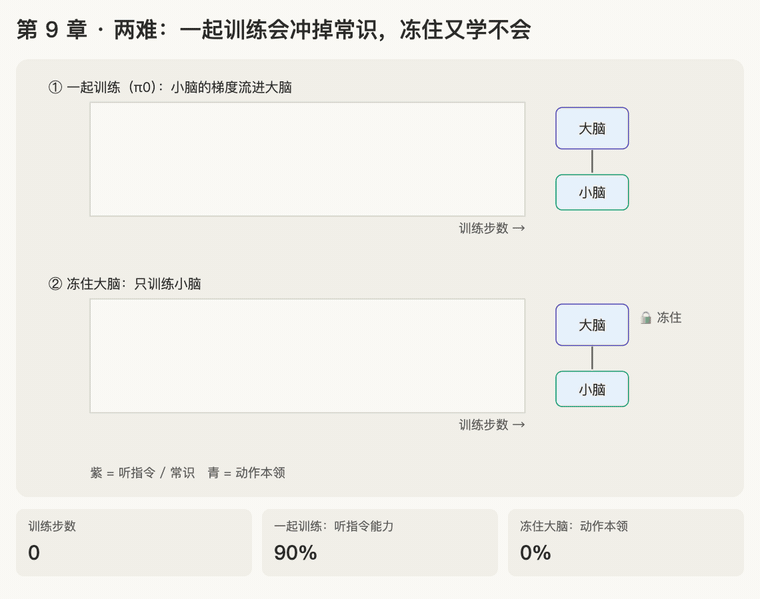

第 9 章 · 知识隔离与 π0.5：别让小脑把大脑的常识冲掉
本章回答：π0 一起训练大脑和小脑，会出什么问题？知识隔离（knowledge insulation）怎么解决？π0.5 的训练配方是什么？
讲解日期：2026-11-09 起 · 上一章：第 8 章 π0 · 下一章：第 10 章 慢想快做：分层系统（待讲）
本章缩写：KI = Knowledge Insulation（知识 / 隔离）；π0.5 = π0 的下一代；FAST = Frequency-space Action Sequence Tokenization（频率空间 / 动作序列 / 分词，第 7 章）；VLM = Vision-Language Model（视觉 / 语言 / 模型）；梯度（gradient）= 告诉每个参数"往哪边改、改多少"的信号。全表见 appendix-glossary.md
对应原文：materials/text/papers/knowledge-insulation-2505.23705.txt（下称 KI 论文）、materials/text/papers/pi05-2504.16054.txt
讲解
第 1 步：两难，一起训练会冲掉常识，冻住又学不会
对应原文：KI 论文第 98–103 行（引言）、第 161–162 行（π0 的问题）、第 262–284 行（图 2 勺子例子、冻住不行）、第 488–507 行（听指令实验）。
先补一个词：梯度
训练就是"做错了就改"。每做一次，算出误差有多大，再算出每个参数该往哪边改、改多少，这个信号就叫梯度。梯度沿着计算的路线倒着往回传：误差从输出出发，经过哪些参数算出来的，就会改到哪些参数。
回顾第 8 章插问 2：小脑（动作专家）每一层都通过 attention 读大脑的 K、V。这条路是双向的：前向时小脑读大脑；训练时，小脑的动作误差也会顺着这条路倒流进大脑，改动大脑的 \(W_K\)、\(W_V\) 和更深处的参数。
问题出在哪：小脑一开始是随机的
- 大脑从 PaliGemma 来，已经学好了看图、读指令的常识；
- 小脑是新加的、随机初始化的（KI 论文第 98–100 行："initialized from scratch"，要"嫁接"到大脑上）；
- 训练刚开始，小脑乱出动作，误差很大，而且误差的"方向"没什么道理。这些乱七八糟的梯度倒流进大脑，把大脑原来学好的东西改坏了。
KI 论文的原话大意：π0 的做法会让听指令能力和训练速度都变差，因为动作专家的梯度损坏了预训练好的 VLM（第 161–162 行）；作者推测原因是"梯度干扰"（gradient interference，第 269–270 行）。
论文里的例子（图 2，第 274–281 行）：让机器人"把勺子放进垃圾桶"，π0 不管指令，去抓了一块垃圾。它看图知道"桌上有东西可以收拾"，却不再认真听指令说的是哪个。论文还发现，π0 要比别的做法多训练很多步才收敛（第 488–490 行）。
白话类比：老员工和新实习生
老员工（大脑）经验丰富，实习生（小脑）什么都不会。两人一起干活，干砸了，老板把两人一起批。实习生干砸本来是因为他不会，可老员工也挨了批，就开始怀疑自己、改掉原来正确的习惯，比如不再仔细看工单（指令）了。
那把大脑冻住，不让它改，行不行？
不行。KI 论文第 270–284 行："freezing doesn't work"。PaliGemma 预训练时从没见过机器人数据，它的理解里没有"关节该怎么动""夹爪离杯子还有多远"这类信息。冻住它，小脑读到的东西不够用，论文实验里成功率是 0%（第 283–284 行）。
两难：
| 做法 | 常识（听指令） | 机器人本领 |
|---|---|---|
| 一起训练（π0） | 被冲掉一部分 | 能学会，但慢 |
| 冻住大脑 | 完全保住 | 学不会（0%） |
大脑必须学一点机器人的东西，但不能被随机小脑的梯度乱改。第 2 步讲 KI 怎么两头都要。
动画演示：两难

可交互版：animations/09-gradient-interference.html（可播放、单步、重来）。曲线是示意，表达论文结论的方向，不是论文里的数字。
怎么看：
- 上面（一起训练）：红色箭头是小脑的梯度倒流进大脑。紫线（听指令）一开始就掉下去；青线（动作本领）慢慢涨。最后它把"勺子放进垃圾桶"做成了抓垃圾。
- 下面（冻住大脑）：紫线一直平稳，青线几乎贴着底，动作做不出来。
第 2 步：知识隔离怎么做，小脑只读不改，大脑另有老师
对应原文：KI 论文第 286–298 行（三项措施）、第 300–337 行（§5.1 同时学离散和连续动作）、第 339–374 行（§5.2 stop-gradient，式 5–6）、第 476–480 行（图 6：π0 要多 7.5 倍训练步数）。
回到第 1 步的两难：大脑必须学机器人的东西（不能冻住），又不能被随机小脑的梯度乱改。KI 的办法是换一个老师：大脑不再听小脑的，改听一个靠谱的老师。
三项措施（第 286–298 行）
| # | 名字 | 做什么 | 解决什么 |
|---|---|---|---|
| 1 | 联合训练（joint-training） | 大脑自己也学念 FAST 动作词（第 7 章的离散 token，下一个词预测）；小脑同时用 flow matching 学连续动作 | 大脑有了一个干净的学机器人信号，而且学得快 |
| 2 | 图文数据共训（VLM data co-training） | 训练时继续混网络上的看图说话、问答、找物体数据，以及机器人规划数据 | 常识不丢 |
| 3 | 停止梯度（stop-gradient，sg） | 小脑照样读大脑的 K、V，但它的误差不往大脑里传 | 随机小脑改不到大脑 |
措施 3 的关键：只读不改
KI 论文把 attention 改成这样（式 5、6，第 359–371 行）。b = backbone（大脑），a = action expert（小脑）：
读法："sg 括号 K b" = 把大脑的 K 当成常数来用。
- 前向（算结果时）：sg 什么也不做，小脑读到的 K、V 和原来一模一样；
- 反向（训练改参数时）：误差走到 sg 就停，不再往大脑里传。所以小脑的 flow matching 误差只改小脑自己的权重。
- 右上角的 0 是第 8 章的遮挡：大脑看不到小脑。
为什么措施 3 不会变成"冻住"？ 论文专门说了：stop-gradient 当且仅当大脑同时被训练去直接预测动作时才合理（第 344–346 行）。也就是说，措施 3 必须和措施 1 一起用：大脑虽然不听小脑的，但它自己在学念 FAST 动作词，照样学到了机器人的东西。这就是和第 1 步"冻住大脑"的区别。
另外，FAST 动作词和连续动作 token 之间互相看不见（第 333–334 行），两条路各学各的。
推理时：FAST 那条路只在训练时用来"教大脑"（第 290–292 行），推理时仍然由小脑用 flow matching 走 10 步出连续动作，所以照样快。
效果：π0 要多训练约 7.5 倍的步数才能达到差不多的水平（图 6，第 476–480 行）；KI 听指令更好，训练和 π0-FAST 一样快，推理又和 π0 一样快。
白话类比：换个老师
第 1 步里，老员工（大脑）被实习生（小脑）的错误连累挨批。现在的做法是： - 老员工有了自己的考核：自己也写一份简化版的工作方案（FAST 动作词），按这份方案打分； - 每周还继续做老本行（图文数据），手艺不生疏； - 实习生可以随时翻老员工的笔记（读 K、V），但实习生干砸了只批实习生（stop-gradient）。
公式：总损失 = 念词的损失（语言 + FAST 动作词）+ α × flow matching 损失（式 4，第 315–318 行）。因为两部分改的是不同的权重，论文直接取 α = 1（第 373–374 行）。
动画演示：知识隔离

可交互版：animations/09b-knowledge-insulation.html（可播放、单步、重来）。下方曲线是示意。
怎么看：
- 三种信号轮流亮：蓝色虚线是前向，小脑读大脑的 K、V；红色是小脑的误差往回传，撞到 sg 墙停下；紫色（FAST 动作词）和橙色（网络图文数据）是大脑自己的两个老师。
- 下图：KI（绿）和 π0-FAST（紫）都涨得快；π0（红）涨得慢；冻住大脑（灰）贴着底。
练习与作答记录
题 1： 1. π0 训练时，小脑的梯度是通过哪条路流进大脑的？ 2. 为什么偏偏是"训练刚开始"的时候伤害最大？ 3. 既然会被冲坏，为什么不干脆把大脑冻住？
作答（2026-11-11，原话）："听指令梯度倒流进大脑，2 刚开始是随机的，3 完全冻住就无法学习了" ◐
点评： - 问 1 ◐：说出了"梯度倒流进大脑"，但没说走哪条路。路是 attention：小脑每层读大脑的 K、V，训练时误差顺着这条读的路倒回去，改大脑的 \(W_K\)、\(W_V\) 和更深的参数。"听指令"是被伤到的能力，不是路。 - 问 2 ✓：小脑刚开始是随机的。补一句：所以它的误差又大、方向又没道理，倒流进大脑的就是"乱改"。 - 问 3 ✓：方向对。说具体：PaliGemma 从没见过机器人数据，冻住后读出的东西不够小脑用，论文里成功率 0%。
题 2（第 2 步）： 1. KI 的三项措施各是什么？哪一项保证"随机小脑改不到大脑"？ 2. stop-gradient 在前向（算结果）和反向（改参数）时各做什么？ 3. 只用 stop-gradient、不让大脑念 FAST 动作词，会退化成第 1 步的哪种情况？
作答：（待作答）
口诀
实习生干砸，老员工挨批改坏习惯；冻住老员工，又学不会新活。
知识隔离：小脑只读不改，大脑另有老师（FAST 词 + 图文数据）。
本章复习卡片
V25 一起训练为什么伤大脑、为什么不能冻住（见 review.md）